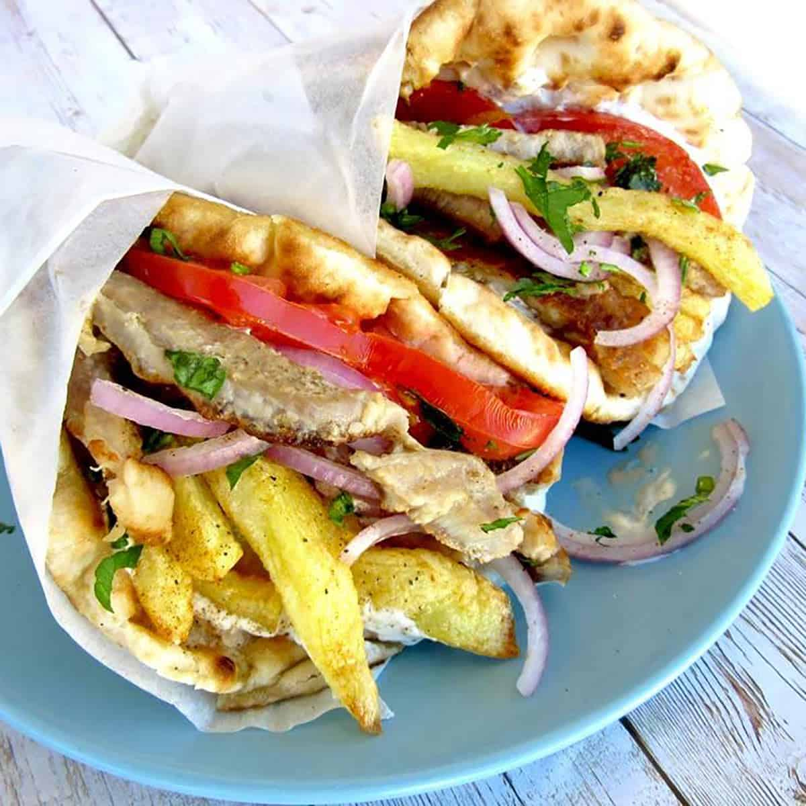

Home
Gyros

Gyros. You know them as overpriced street food you buy from a stall in the UK and wonder, is it actually what they eat in Greece?
But they're actually pretty easy to make yourself, as long as you buy most of the stuff already made.
So skip past this description, and get ready to read the recipe.
You will need:
- Flatbreads (you can usually find them at Tesco).
- 1 Chicken breast per person (or your meat of choice)
- Tzatziki (I buy mine readymade)
- Tomato (Beef preferred)
- Red Onion
- Chips (or fries).
- Garlic, white wine, rosemary, salt, lemon juice, olive oil, oregano (for the marinade).
Steps
- First, you want to dice or cube and then marinade your chicken. Let it sit for at least 10 minutes in the marinade, and then cook it - any method works. Usually I put the chips on at the same time.
- Now you want to prep the tomatoes and the onion. I like to cut the tomatoes first, give the chopping board a quick wipe, then then the onion. The key for both is that we're looking for thin slices. We're not making cubes - unless you want to - we're making thin strips. Place these in bowls.
- At this point, most of the real work, such as it is, is done. Decant or open your tzatziki.
- Make sure you have your tomato, tzatziki and red onion plated and ready to go.
- When the chicken is nearly done, you want to warm a flatbread per person. You can do this in the oven or the microwave; I don't give a shit.
- Let the chicken finish. Douse your chips in paprika. Spread some tzatziki on your flatbread. Put everything that isn't the flatbread on the flatbread and curl it over.
- Eat.